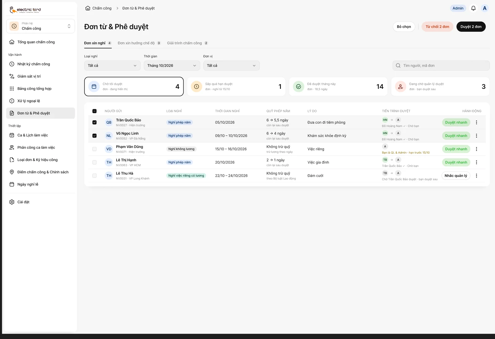

Dự án 02 | Công cụ nội bộ B2B | Design system
Thay FastCons và Excel bằng hệ thống sát với cách công ty thật sự làm việc
Hệ thống quản trị nội bộ của Electric Bird cho chấm công và hồ sơ nhân sự: web cho quản lý và HR, app mobile cho nhân viên. App sau đó mở rộng thành siêu ứng dụng có E-learning. Giữa dự án, tôi chuyển toàn bộ file thiết kế sang ZEN.Kaiz PRO cùng Claude.

Khám phá
Hiểu người dùng
Công ty đang dùng FastCons kết hợp Excel để chấm công, lưu hồ sơ nhân sự bản mềm trên máy tính và cloud, tính lương bằng Misa. Tôi họp chung và phỏng vấn trực tiếp từng người ở phòng Hành chính nhân sự (HCNS). Ba vấn đề họ nêu nhiều nhất:
- Chức năng của FastCons không sát với công việc thực tế của công ty.
- Những việc bắt buộc phải làm lại nằm ở tính năng phụ, khó tìm.
- Ứng dụng hay lỗi vặt.
Xác định
Chốt phạm vi: chấm công và hồ sơ nhân sự
Tôi và PM chốt phạm vi xoay quanh chấm công và quản lý hồ sơ nhân sự; nghiệp vụ lương vẫn để Misa xử lý. Sau đó tôi tự triển khai toàn bộ:
- Chấm công: nhật ký, giám sát vị trí, bảng công tổng hợp, xử lý ngoại lệ, đơn từ và phê duyệt, ca và lịch làm việc, phân công ca, ngày nghỉ lễ.
- Nhân sự: danh sách nhân sự, hợp đồng và phụ lục, hồ sơ giấy tờ, tuyển dụng, đánh giá.
- Hệ thống tổ chức: cơ cấu tổ chức, văn phòng và dự án, phòng ban và chức vụ, tài khoản và phân quyền.
Phát triển
Thiết kế theo đúng quy trình duyệt của HCNS
Dùng Claude: phân tích yêu cầu để đề xuất user flow, thiết kế các UI edge case lặp đi lặp lại, và dựng wireframe ban đầu để chắc không thiếu thông tin trước khi vào UI chi tiết.
Vì sao hiện quỹ phép ngay trên dòng đơn, không chặn khi hết phép
Trên FastCons, quỹ phép nằm ở tab riêng mà HCNS rất ít mở, dù đó là thông tin họ cần để quyết định. Hệ thống cũng không thể tự chặn khi quỹ phép bằng 0, vì vẫn có đơn bất khả kháng được cấp trên đồng ý. Nên tôi hiện quỹ phép trước và sau khi duyệt (6 thành 5,5 ngày) để người duyệt tự quyết.
Vì sao cần tiến trình duyệt trên từng dòng
Quy trình thật có 1 hoặc 2 cấp tuỳ loại đơn. Đơn giải trình chấm công từ lần thứ 2 phải kèm minh chứng và được cấp trên trực tiếp duyệt trước HCNS. Hiện ai đã duyệt, ai đang chờ giúp HCNS biết đơn đang ở bước nào. HCNS đồng ý các thẻ đếm vì khớp quy trình họ cần quản lý.
Vì sao Home mobile chỉ có nút Chấm công
Nhân viên mở app hằng ngày, nhiều nhất để chấm công vào và ra, thứ hai là tạo đơn từ, thứ ba là xem bảng công. Home ưu tiên đúng thứ tự đó: nút chấm công trên cùng, số công tháng ngay bên dưới.
Vì sao chấm công bằng gương mặt cần flow ngoại lệ
Hệ thống vẫn cho chấm công khi gương mặt không khớp, thiếu sáng, ảnh nhoè hoặc mờ, để không chặn việc chấm công hằng ngày. Đổi lại, các lượt đó vào một flow xử lý ngoại lệ để HCNS kiểm tra lại.

Từ ứng dụng nhân viên thành siêu ứng dụng
Ban đầu app chỉ để nhân viên chấm công bằng gương mặt, theo dõi công và tạo đơn từ. Sau đó Giám đốc và PM định hướng lại: tích hợp E-learning để nhân viên làm bài test công ty ngay trên app, rồi biến app thành siêu ứng dụng chứa các mini app khác. Tôi chốt hướng thiết kế app theo mô hình này.
Sidebar web cũng đã thiết kế sẵn cho 7 phân hệ: Nhân sự, Chấm công, An toàn HSE, Chủ đầu tư, Dự án và Công trình, Phân bổ công việc, Hệ thống.
Bàn giao
Bàn giao và kiểm tra
- Bàn giao: file "Ready for Review/Dev" riêng, có chú thích; dev góp ý bằng comment trong file.
- Kiểm tra: họp hàng tuần cùng PM và team để xem bản dev làm và góp ý.
- Design system: tôi bắt đầu với bản ZEN.Kaiz miễn phí, sau đó đề xuất và được công ty đồng ý mua bản PRO, rồi dùng Claude để chuyển đổi toàn bộ file. Chi tiết ở phần dưới.
Một phần của HRM | Design system | AI
Chuyển file HRM 18.000 layer sang ZEN.Kaiz PRO cùng Claude
Chuyển file "HRM – Designing" đang thiết kế dở từ ZEN.Kaiz FREE sang ZEN.Kaiz PRO V.1026, dùng Claude qua Figma MCP để phân tích và xử lý hàng loạt. Kết quả: 0 tham chiếu còn trỏ về bản FREE, giao diện giữ nguyên.
Vì sao
Hai bộ "giống nhau" nhưng khác kiến trúc biến
Bản FREE khoá nhiều component quan trọng (Sidebar, Table, Date Picker, Popover, Side Panel), nên tôi phải vẽ tay nhiều phần. Tôi đề xuất công ty mua bản PRO. Hai bộ giống nhau về tên component và token, nhưng khác kiến trúc biến, ví dụ collection "Component Colors (Theme)" thành "Component Theme", typography "Global – Base 14" thành "Zen-Platform", "Avatar/Group" thành "Avatar/Stack".
6 bước
Lập bảng map trước, gỡ thư viện cũ sau cùng
- Khảo sát và lập bảng map FREE sang PRO: xác nhận cả 93 biến đang dùng đều có trong PRO.
- Publish thư viện PRO vào team: vì Swap library chỉ chạy với thư viện đã publish.
- Swap library, thử trên Draft trước rồi toàn file: xử lý 2 lỗi "None found" (Checkbox/Text thừa property, Avatar/Group đổi tên).
- Dọn phần bỏ sót bằng script: đặt lại mode trên khoảng 430 frame, remap biến (chỉ 8 text node phải gỡ bind), đổi khoảng 1.000 instance lồng nhau, sửa 2 component local để 66 màn tự cập nhật.
- Thay phần vẽ tay bằng component PRO: 3 ô chọn tháng, 3 ô tìm kiếm, 5 dropdown trong bảng.
- Kiểm tra rồi mới gỡ thư viện cũ: quét lại, so sánh ảnh, còn 0 tham chiếu FREE thì lưu version và gỡ.
Tôi và Claude
AI làm phần lặp lại, designer giữ quyết định
Claude
Đọc và so sánh 3 file Figma qua MCP, đề xuất phương án, hướng dẫn thao tác, viết và chạy script, kiểm tra sau mỗi bước, tổng hợp báo cáo.
Tôi
Chọn chuyển toàn file thay vì chỉ page Draft; quyết định dọn sạch trước khi gỡ thư viện thay vì gỡ ngay và chấp nhận lỗi; làm các thao tác cần quyền chủ file; duyệt kết quả trực quan.
Khi AI sai: Claude từng nhận định Swap library không đổi được variable. Tôi gửi ảnh chụp dialog thực tế và Claude đính chính. Designer vẫn là người kiểm chứng.
Bài học
Kết quả và điều tôi rút ra
- File HRM chạy hoàn toàn trên PRO, 0 tham chiếu FREE, hiển thị giữ nguyên; có bảng map dùng lại được và lộ trình giai đoạn 2 (Sidebar, Side panel, Popover, Modal, Date picker, Bảng) theo nguyên tắc "đổi vỏ, giữ ruột".
- Hai design system "giống nhau" vẫn có thể khác kiến trúc biến, cần lập bảng map trước khi swap.
- Swap library chỉ giải quyết khoảng 80–90% khối lượng; mode trên frame và override lồng nhau cần xử lý riêng.
Đo lường
Đo mốc ban đầu khi đang thử nghiệm
HRM đang thử nghiệm trước khi áp dụng chính thức, nên đây là lúc đo baseline. Các chỉ số tôi đề xuất, chưa có kết quả:
| Mục tiêu | Chỉ số đề xuất |
|---|---|
| Chấm công nhanh, ít lỗi | Thời gian từ lúc mở app đến lúc chấm công xong; tỷ lệ chấm công thành công ngay lần đầu |
| Duyệt đơn nhanh, đủ thông tin | Thời gian từ lúc tạo đơn đến lúc duyệt xong; số đơn HCNS phải hỏi lại hoặc yêu cầu bổ sung minh chứng |
| Thay FastCons và Excel | Tỷ lệ nhân viên chấm công qua app; thời gian HCNS chốt bảng công cuối tháng so với cách cũ |
Định tính: usability test với khoảng 5 nhân viên qua 3 tác vụ dùng nhiều nhất (chấm công, tạo đơn, xem bảng công); phỏng vấn lại HCNS sau một tháng về màn duyệt đơn.
Dự án tiếp theo